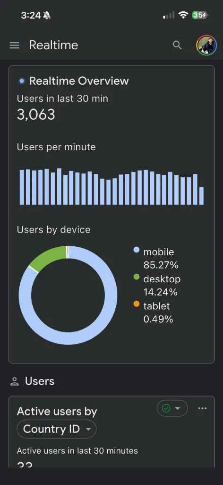
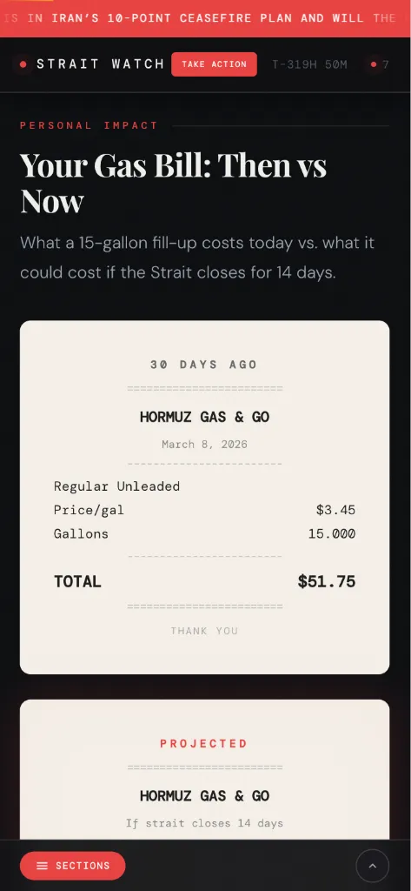
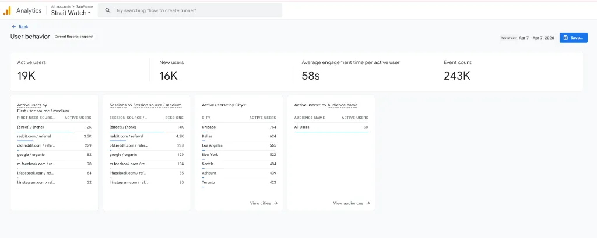
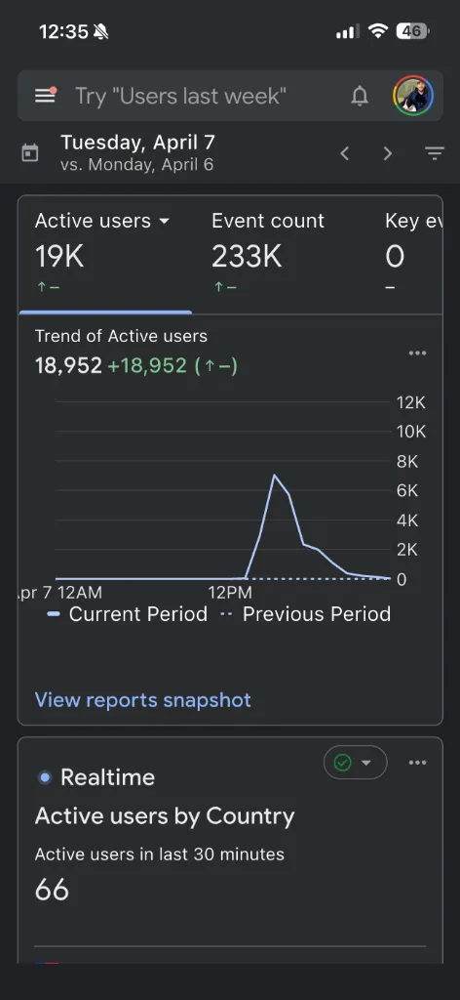

I Built a Site in 50 Minutes. 19,000 People Showed Up the Same Day.
What a one-day geopolitical traffic experiment taught me about AI agentic workflows — and why the velocity advantage is now the most important moat for indie developers.

Yesterday, I had an idea around noon. There was a news story breaking about the Strait of Hormuz — shipping lanes, geopolitical tension, global oil supply. My first thought wasn't this is interesting. It was: how fast could I deploy something useful about this?
By around 1 PM, a fully interactive site — live data, ship tracking, oil price feeds, real-time news — was deployed and indexed. Fifty minutes from idea to production. By that evening, 19,000 people had visited it.
That wasn't luck. It was a workflow.
Minutes to first deploy
Minutes per iteration cycle
Users, same day
Concurrent peak users
The Execution Bottleneck Is Gone
For years, the biggest constraint for indie developers wasn't ideas — it was execution time. You'd have an idea on Monday, spend a week building it, fight your deployment pipeline on Thursday, and launch on Friday to find the news cycle had moved on. By the time your thing was live, nobody cared.
AI agentic workflows break this equation. The constraint is no longer "how long does it take to build?" The constraint is now "how fast can you think?"
The Strait Watch project — that's what I called it — was a deliberate test. I wanted to see if I could turn a news moment into a live, interactive product before the traffic opportunity passed. This wasn't just a personal experiment: it was a proof-of-concept for the exact same workflows I use to build and iterate on GainFrame every week.
The Workflow: Role-Scoped Agents with Hard Constraints
The approach that made this possible isn't just "use ChatGPT to write code." It's a structured pattern I've developed over months of building GainFrame features. Here's how it works:
- Define scope before depth. Instead of one agent doing everything, I assign specific roles: one agent owns layout structure, one owns data formatting, one owns styling. Each prompt includes an explicit constraint list — no frameworks, vanilla JS only, Cloudflare Workers-compatible, no external dependencies. Role-scoping keeps output deterministic.
- Manual validation gates before every push. Every agent output gets a human review before hitting
wrangler deploy. This isn't optional — it's the step that keeps the error rate low. On this project, roughly 20% of agent output needed manual correction, mostly HTML semantic and ARIA issues. - Sub-minute push cycles via Wrangler CLI. Cloudflare Workers + Wrangler CLI means the feedback loop from file save to live verification was under 60 seconds. That's the part that creates the velocity — fast deployment collapses the iteration time to ~3 minutes total.
- Explicit success criteria per iteration. Before starting a new iteration, I write down exactly what "done" looks like. This forces clarity before the agent runs and reduces the back-and-forth correction loop dramatically.
What the Site Looked Like
Strait Watch was built entirely with vanilla JavaScript and Cloudflare Workers — no frameworks, no build pipeline, no database. It pulled live ship AIS data, oil price feeds, and real-time news about the Strait of Hormuz. The entire thing ran serverlessly at the edge, which meant it could handle the traffic spike without any infrastructure changes.


The Traffic: What Actually Happened
The traffic wasn't from a viral post or a paid campaign. It came from a single Reddit comment pointing to the site during an active discussion thread about the Strait situation. That comment hit at peak interest — when people were actively searching for consolidated, real-time information and couldn't find it anywhere else.
The GA4 data tells the full story:


The spike came fast. It also faded fast — that's how topical traffic works. The point isn't that this site has long-term value. The point is that the window to capture that traffic was measured in hours, and I was inside the window instead of missing it.
The window to capture topical traffic is measured in hours. You either have a workflow fast enough to be inside it — or you don't.
How This Connects to Building GainFrame
GainFrame is not a news site. The dynamics are completely different. But the underlying workflow is the same, and the Strait Watch experiment gave me real data to validate it at an extreme.
When a GainFrame user submits feedback — say, a request for a new import format or a UI fix — the same role-scoped agent workflow kicks in. I define scope, agents handle implementation, I validate and push. The feedback-to-update cycle that used to take days now takes hours. In a few cases, it's taken under an hour from feature request to TestFlight build.
That's not a small thing. Most apps move on a weekly or biweekly release cadence because that's how long it takes to build, test, and ship. Compress that cycle — and do it reliably — and you build a different kind of product. One that feels like it's listening.
The Honest Numbers on Agent Reliability
I want to be clear about the limitations here, because the hype around AI coding often obscures the actual workflow.
About 20% of agent output required manual correction. On Strait Watch, this was mostly HTML semantic issues and ARIA attribute errors — things that didn't break visual rendering but would fail accessibility audits. In GainFrame work, the typical failures are around edge cases in data formatting and occasionally incorrect SwiftUI modifier ordering.
The agents aren't magic. They're fast, precise within a narrow scope, and consistent when given tight constraints. The human work shifts from writing code to writing good prompts, validating outputs, and knowing what to fix manually. That's a fundamentally different skill — but it's a learnable one, and the leverage it creates is real.
What the Velocity Advantage Actually Means
The traditional competitive moat for a software product was depth: more features, more polish, more time invested than your competitors. That moat still exists. But it takes longer to build and longer to show results.
Velocity is a different moat. When you can ship a response to user feedback in hours instead of weeks, you create a different relationship with your users. They feel heard. The product improves faster than they expect. The review momentum builds.
For indie developers, this isn't theoretical. It's the most practical advantage available right now. You can't out-resource a team of 50 engineers. You can out-iterate them.
The execution bottleneck is gone. The question is whether you've built the workflow to prove it.
Try the App Built with This Workflow
GainFrame is built using these same agentic workflows — rapid iteration, data-driven prioritization, and user feedback that actually moves the roadmap. Download it and see your first AI physique analysis in under a minute.
Track your physique like a product team tracks users. Download GainFrame and get your first AI muscle group breakdown instantly.